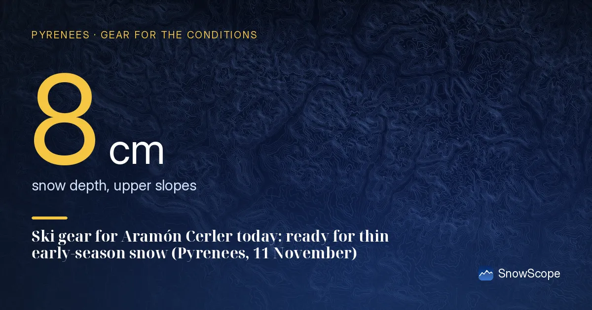
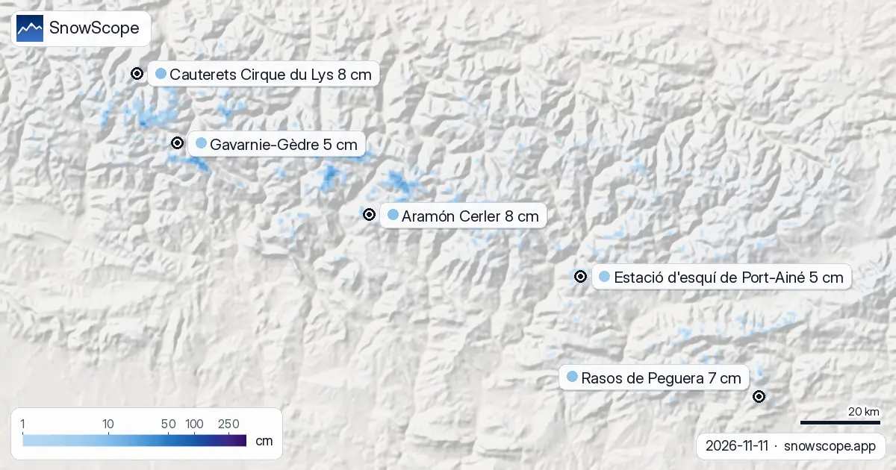
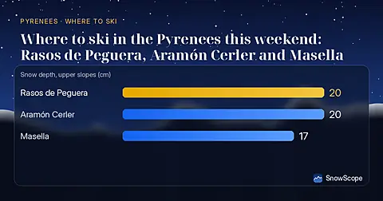

Ski gear for Aramón Cerler today: ready for thin early-season snow (Pyrenees, 11 November)
Early-season snow across the Pyrenees today is sparse and fragile, with warm air turning what little exists into crust. We show you what to wear and pack at each resort, where to find the best conditions, and when the freezing level threatens rain.
See the live snow forecast for Aramón Cerler in the SnowScope appSnow depth, powder alerts and the 3D map, free.
What you face today
Upper slopes hold between 5 and 8 cm of snow at the five largest resorts. Aramón Cerler has 8 cm, Cauterets Cirque du Lys has 8 cm, Rasos de Peguera has 7 cm, Estació d'esquí de Port-Ainé has 5 cm, and Gavarnie-Gèdre has 5 cm. This thin cover means rocks, stumps and hard ground are close to the surface.
Warm air is rising into the mountains today and tomorrow. At Aramón Cerler the freezing level reaches 3,270 m by afternoon on 12 November, well above the top at 2,618 m. At Rasos de Peguera it climbs to 3,480 m. When the air above the highest slopes stays warm during the day, sun and air melt the surface; at night it refreezes into crust. Cauterets Cirque du Lys stays a little cooler, with the freezing level reaching only 3,160 m tomorrow.
| Resort | Snow depth | New snow, 72 h | Coming, next days | Top |
|---|---|---|---|---|
| Aramón Cerler | 8 cm | 3 cm | 6 cm | 2,618 m |
| Cauterets Cirque du Lys | 8 cm | 1 cm | 18 cm | 2,420 m |
| Rasos de Peguera | 7 cm | 0 cm | 0 cm | 2,036 m |
| Estació d'esquí de Port-Ainé | 5 cm | 0 cm | 1 cm | 2,424 m |
| Gavarnie-Gèdre | 5 cm | 0 cm | 11 cm | 2,283 m |

Gear that works now
Bring older or rented skis. Thin snow does not hide obstacles, so sacrifice your best skis to protect them. Rent from a local shop if yours are not with you; they will also service and sharpen edges for today's conditions.
Pack a waterproof shell and base layers that dry fast. Early morning snow may be soft, but by mid-morning wet snow clings to your clothes and runs cold. Waterproof gloves matter more than thick insulation. A helmet is essential: thin snow means exposed rocks, and icy crust after thaw-freeze cycles is hard.
Carry edge-tuning tools or visit a shop. Sharp edges bite into crust; dull edges skid on it. If you ski off-piste or in variable terrain today, you will feel every dull edge.

Where the snow stays best
The highest, north-facing runs keep the best snow because they receive the least sun and stay coldest longest. At Aramón Cerler, ride to 2,618 m and choose shaded aspects. At Cauterets Cirque du Lys (top 2,420 m) north-facing slopes hold more of the 8 cm than sunny sides.
Stay on groomed runs. Piste machines groom away rocks and smooth the crust that forms between runs. Off-piste, the thin cover breaks easily and throws you onto hard ground or stones. Groomed runs also stay warmer because skier traffic and machine passes break up the freeze-thaw cycle.
When to ski each day
Early morning is best. The snow refreezes overnight, so the first runs have the firmest surface and the best edge grip. By mid-morning, sun and warm air soften the top layer. By afternoon, crust turns to mush if the sun reaches it, or stays rock-hard if shade keeps it cold.
On 13 November, the freezing level drops to between 2,330 m and 2,860 m, so the air cools slightly. This is a better day for skiing than 12 November: less afternoon melt, more stable snow.
Snow depth across the region
The Pyrenees held snow across 1,190 km2 two days ago but only 490 km2 today. Warm air has melted snow lower down and thinned the cover on many upper slopes. The region's 18 resorts with any snow at the top now will shrink to 14 by 14 November if forecasts hold.
Cauterets Cirque du Lys and Gavarnie-Gèdre will receive more snow in the next days (18 cm and 11 cm forecast), so conditions there improve slightly. Rasos de Peguera and Estació d'esquí de Port-Ainé get almost nothing (0 and 1 cm forecast) and will stay very thin.
Off-piste and avalanche risk
Before you leave the groomed runs, read the official avalanche bulletin for the Pyrenees. Early-season snowpacks are often unstable because they sit on warm ground or old, weak layers. Thin snow that looks safe may hide buried hazard.
If you go off-piste or ski touring, carry an avalanche transceiver, shovel and probe. Know how to use them. Never ski alone off the pistes.
Tips for skiers
- Ski early. The first tracks of the morning will grip far better than those in the afternoon sun.
- Choose the highest, north-facing runs. They stay coldest and hold the most of the thin snowpack.
- Rent or service skis locally. Sharp edges are not optional on crust and thin snow.
- Check the resort's website before you go: snow on the map does not mean lifts are running.
- Before any off-piste day, read the official avalanche bulletin and never ski alone.
About these numbers
Resort snow depths are the deepest snow on the resort's upper slopes on the date shown; they are estimates for an area, not a measurement at one point. Forecasts can change. Always read the official avalanche bulletin before going off-piste.
Official avalanche bulletins: Météo-France / Meteocat / AEMET
Cite this report
For research, teaching or the press: the numbers and charts are free to reuse under CC BY 4.0 with this citation.
SnowScope (2026), Ski gear for Aramón Cerler today: ready for thin early-season snow (Pyrenees, 11 November), https://snowscope.app/blog/en/2026/11/pyrenees-what-to-bring-ski-gear-conditions-11-november-2026.html, accessed 2026-11-11
SnowScope (Atlas Labs). (2026, November 11). Ski gear for Aramón Cerler today: ready for thin early-season snow (Pyrenees, 11 November). SnowScope snow reports. https://snowscope.app/blog/en/2026/11/pyrenees-what-to-bring-ski-gear-conditions-11-november-2026.html
BibTeX
@misc{snowscope2026pyreneeswhattobringskige,
author = {{SnowScope (Atlas Labs)}},
title = {Ski gear for Aramón Cerler today: ready for thin early-season snow (Pyrenees, 11 November)},
year = {2026},
month = nov,
howpublished = {\url{https://snowscope.app/blog/en/2026/11/pyrenees-what-to-bring-ski-gear-conditions-11-november-2026.html}},
note = {Published 2026-11-11 18:44 UTC; accessed 2026-11-11}
}· CC BY 4.0 · Methods, data and tools →
Aramón Cerler: snow and temperature by height, this winter vs last (tools) →
Follow Aramón Cerler
Free: a message when fresh snow is coming, and the forecast every morning.
More snow reports

On 6 November, one Pyrenees resort has snow well above normal for the date. SnowScope compared four resorts with the past 46 winters.

Cauterets offers 25 km of runs for 46 EUR, but our snow history shows that the best chance for cover is the last week of December.

Three Pyrenees resorts have snow for the weekend of 7 November. Rasos de Peguera, Aramón Cerler and Masella each hold 17–20 cm on upper slopes after 72 hours of fresh snow.